Maxime Cordy
2026
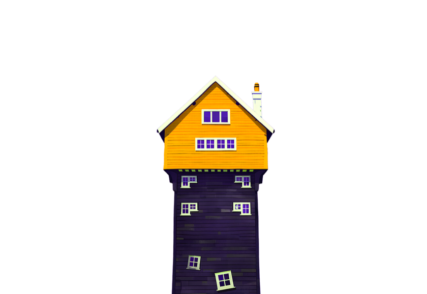
- Patricia


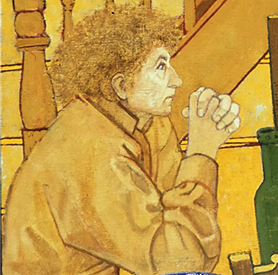
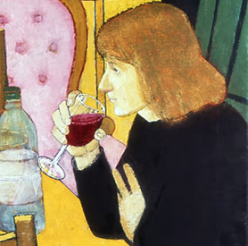
William nous invite à entrer dans son domicile pour y partager des moments de vie.
Dans la plupart des tableaux apparaît Patricia, qui, malgré les années, reste présente auprès de William.
Elle est accompagnée d'une de ses amies, venue partager un verre et discuter.
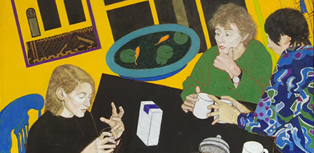
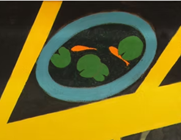
Les intérieurs de William et Patricia reflètent un univers vif et coloré, où les perspectives se mêlent et se confondent.
Les trois femmes boivent un café ou du vin et s'écoutent parler pendant que les perspectives de la pièce se perdent.
Les reflets et les couleurs sont variés, tandis que l'extérieur demeure sombre.
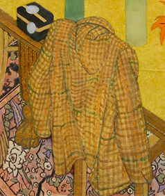
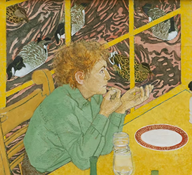
Alors qu'une veste posée sur la chaise nous fait remarquer que William n'est plus présent dans la discussion.
Patricia, elle, continue de dialoguer avec ses amies à table, la scène étant sublimée par des canards en arrière-plan.
Cette série puise directement dans les souvenirs de William. Il va y placer plein de références à sa vie passée.
Les invités défilent mais ne se ressemblent pas. En 1991, William peint cette conversation entre l'un de ses amis et sa femme.
Patricia est accompagnée de son chat noir, qui ne manque pas de faire tomber le bol. La composition penche vers la gauche.
Des souvenirs de William sont représentés dans les reflets ou dans les tableaux au deuxième plan.
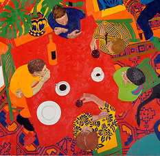
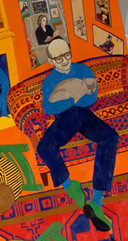
Un groupe d'amis s'invite à la maison alors que la perspective, les reflets et l'environnement perdent de leur sens.
William apparaît enfin. On le retrouve sur le canapé, son chat blotti contre lui. Toujours à l'écart, perdu dans ses pensées...
Il évolue dans cette maison où l'extérieur semble se fondre à l'intérieur.
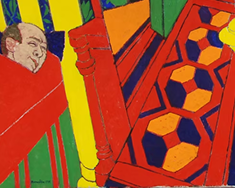
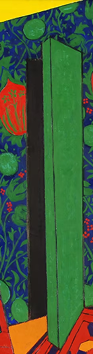
Dans le lit, les chats se reposent et Patricia lit. William est épuisé, il s'est déjà endormi.
Le reflet dans le miroir est déformé. La porte est ouverte, mais rien n'apparaît derrière. À présent, la perspective penche entièrement vers la gauche.
Pour Patricia, tous ces petits signes ne trompent plus : le corps de William commence à lui faire défaut.